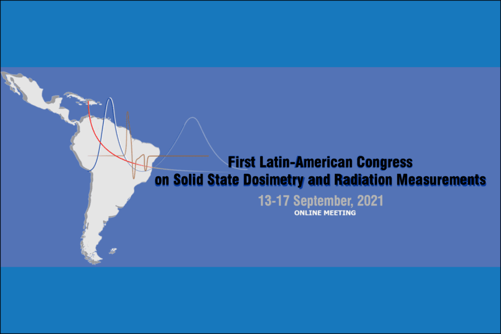
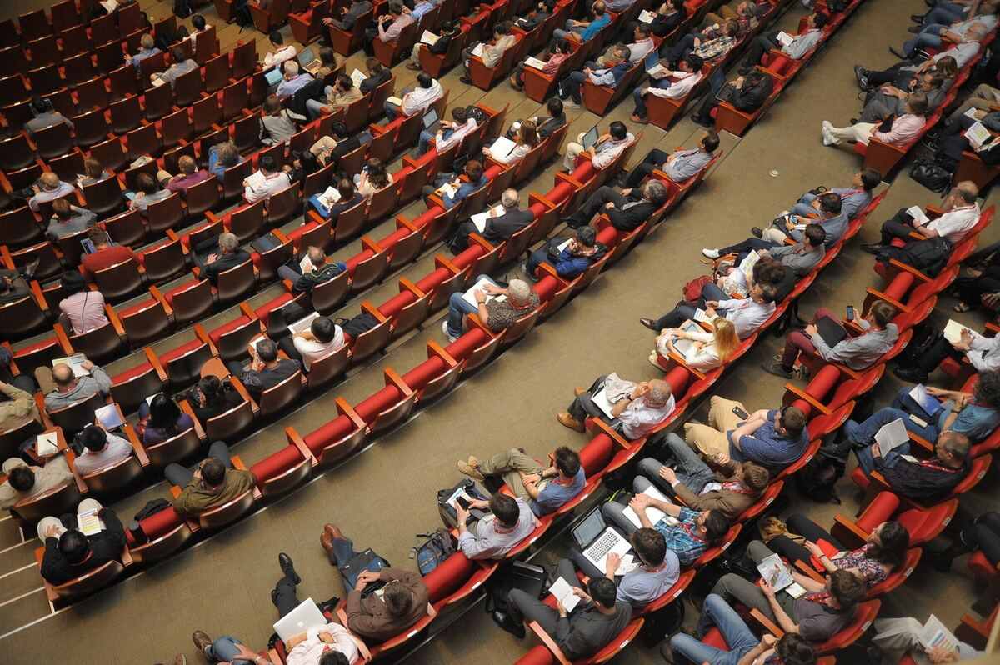

Em inglês
First Latin-American Congress on Solid State Dosimetry and Radiation Measurements
Encontro da comunidade latino-americana que estuda dosimetria das radiações com métodos de matéria condensada e estado sólido, para compartilhar resultados e fortalecer a área na região. Pesquisadores de outras regiões também foram convidados.
- Formato
- On-line, por causa da pandemia
- Antes do congresso
- Shigueo Watanabe School: Concepts and Trends in Radiation Dosimetry and its Applications
- Para quem
- Pesquisadores e estudantes de dosimetria de estado sólido
Link dos anais do congresso (resumos) a recuperar do site antigo.

Próximos eventos
Os próximos eventos do grupo serão divulgados aqui e no Instagram.